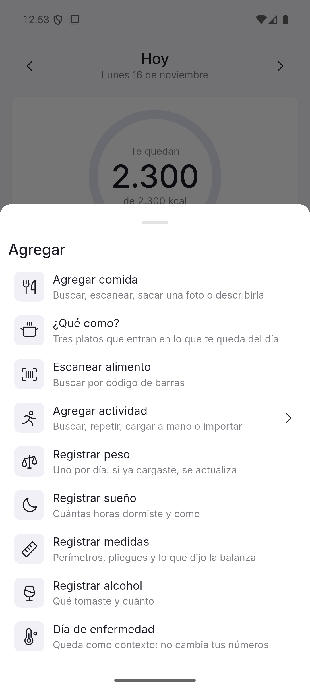
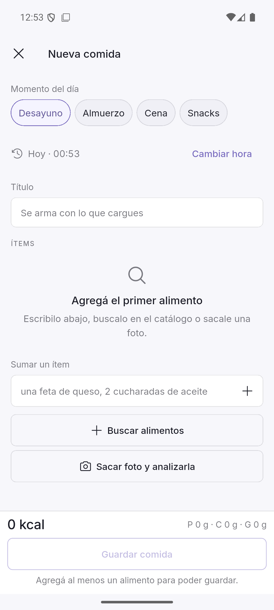
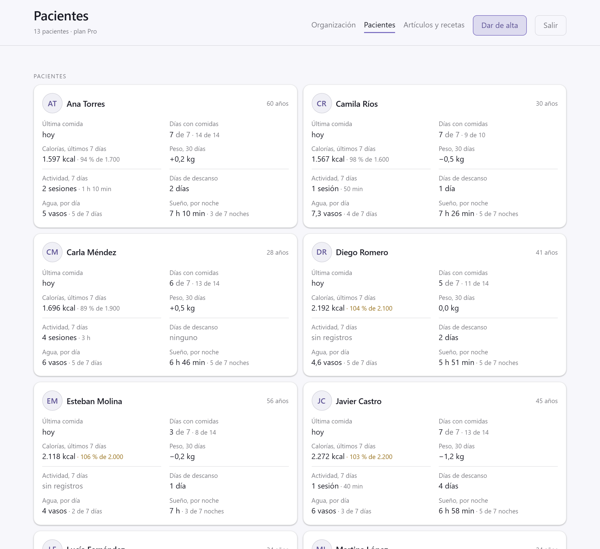
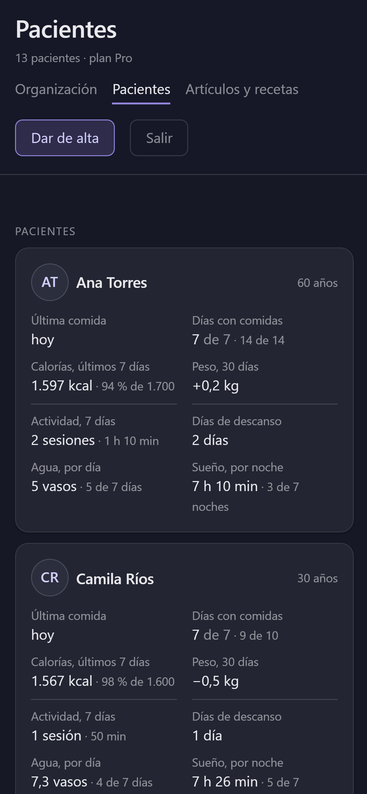
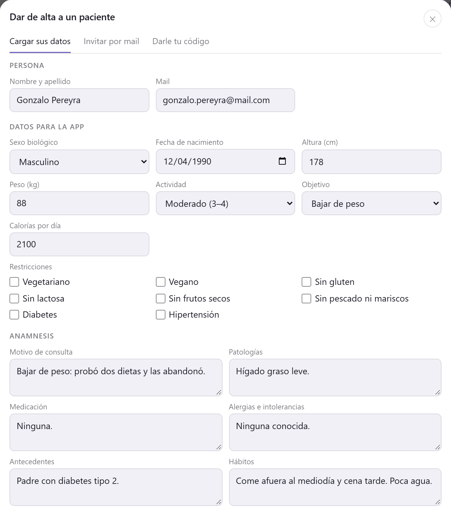
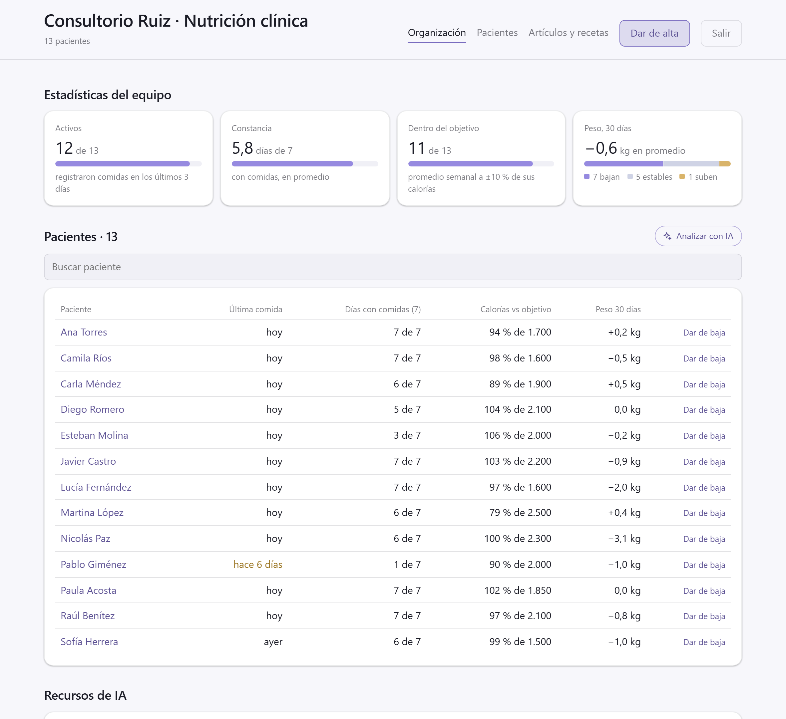
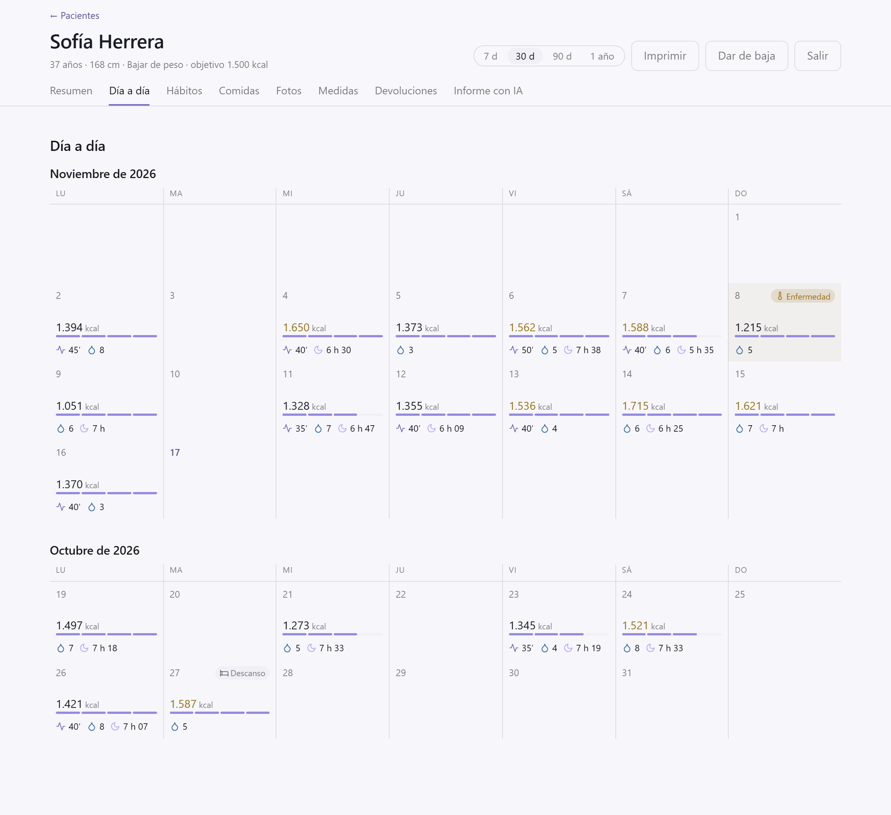
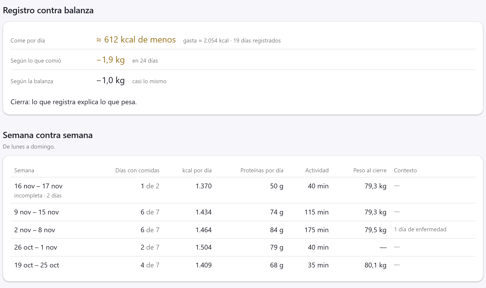
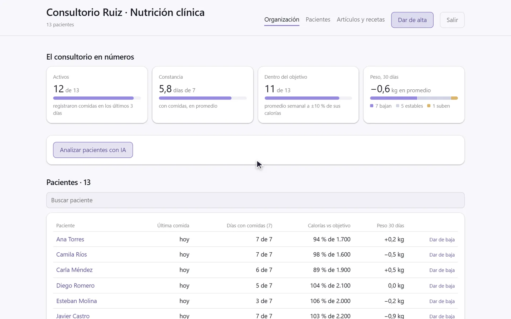

Registro de comidas con IA, conectado a tu nutricionista.
Matías Gulin Castells · Tesis de la tecnicatura · Noviembre de 2026
01
Problemática y origen
01 · Problemática
El problema
Llevar registro se abandona. Y la profesional trabaja a ciegas.
1
Cargar comida es tedioso
Buscar cada alimento, pesar, intentar adivinar los gramos, en cada comida del día. A las pocas semanas se deja.
2
Consultas de memoria
Entre una consulta y otra pasan 2 a 4 semanas, y la nutricionista trabaja con lo que el paciente recuerda.
3
Los hábitos no se ven
Cuándo se come de más, qué se repite y qué lo provoca: sin un registro, no hay de dónde sacarlo.
4
No hay una meta para hoy
El plan dice qué lograr en meses, pero no cuánto comer hoy ni si el día viene bien.
01 · Problemática
La respuesta
Cómo lo resuelve Ceres.
1
Una foto o una frase alcanza
La IA reconoce cada alimento y estima los gramos. Lo que se come seguido se repite en un toque.
2
La profesional ve lo que pasó
Comidas, peso, actividad y sueño le llegan a su panel entre una consulta y otra.
3
Los hábitos quedan a la vista
La persona entiende sus propios patrones: en qué momento come más y qué se repite semana a semana.
4
Una meta para cada día
Cuántas calorías le quedan hoy, con el objetivo que le recomienda su nutricionista.
02
Hecha con nutricionistas
02 · Hecha con nutricionistas
Con profesionales
La app se diseñó junto a seis nutricionistas.
01 · ENTREVISTAS
Seis nutricionistas con distintas especializaciones: clínica, deportología y antropometría.
02 · MISMAS PREGUNTAS
Para comparar enfoques y metodologías de trabajo.
03 · PUESTA EN COMÚN
Se juntaron las respuestas y se planificaron las funciones.
04 · DISEÑO E ITERACIÓN
Puesta en práctica con población real.
La consulta
1¿Cuántos pacientes ves y cada cuánto vuelve cada uno?
2¿Qué es lo primero que mirás cuando llega un paciente?
3¿Qué datos te faltan hoy en una consulta?
4¿Cuánto te lleva preparar una consulta?
5¿Qué querrías saber de lo que pasó entre consultas?
El registro
6¿Tus pacientes llevan registro? ¿En qué formato?
7¿Por qué creés que lo abandonan?
8¿Qué precisión en las porciones te alcanza?
9¿Qué tabla de composición de alimentos usás?
10Además de la comida, ¿qué querés que registren?
El seguimiento
11¿Cómo le marcás un objetivo diario a un paciente?
12¿Cómo le hacés llegar indicaciones entre consultas?
13¿Qué te preocupa de que una app le muestre números?
14¿Qué te haría recomendar una app a tus pacientes?
15¿Cuánto pagarías por una herramienta así?
02 · Hecha con nutricionistas
La app
Registra lo que las nutricionistas necesitan ver en la consulta.
Comidas por foto, texto o voz, catálogo o código de barras.
Actividad, peso, medidas, agua, sueño y alcohol.
Días de enfermedad o descanso.

Agregar

Nueva comida
03
La IA en Ceres
03 · La IA en Ceres
IA en la consulta
Dónde ayuda la IA en una consulta nutricional.
ANTES
Informe de consulta
Lo que pasó desde la última visita, resumido y listo para leer.
DURANTE
Borradores de devolución
La profesional los revisa, los corrige y recién ahí los envía.
ENTRE CONSULTAS
Acompañamiento
Resumen semanal y qué comer con lo que le queda del día.
EN EL CONSULTORIO
Análisis de todos sus pacientes
Tendencias del grupo: constancia, objetivos cumplidos y evolución del peso.
Lo que les preguntamos sobre IA
Lo que respondieron
16
¿Usás alguna herramienta de IA hoy en tu trabajo?
Pocas, y solo para redactar textos o planes. Ninguna con datos de sus pacientes.
17
¿En qué parte de la consulta te ahorraría más tiempo?
Al prepararla: revisar qué pasó desde la última visita.
18
¿Confiarías en una estimación de calorías hecha a partir de una foto?
Sí, si el paciente puede corregirla y las calorías salen de una tabla oficial.
19
¿Qué no debería hacer nunca la IA con un paciente?
Indicar una dieta o sacar conclusiones clínicas sin que la profesional lo revise.
20
¿Te serviría leer un resumen antes de cada consulta?
Sí, todas: corto, con números y sin diagnósticos.
03 · La IA en Ceres
IA para el paciente
Qué le aporta la IA a la persona que registra.
1 · Registrar
Cargar una comida
Con una foto, con una descripción o buscando en la tabla oficial.
2 · Analizar
Análisis nutricional
Calcula calorías, proteínas, carbohidratos y grasas de cada comida.
3 · Recomendar
¿Qué como?
Platos que entran en las calorías que le quedan, según la devolución de su nutricionista.
4 · Calcular
Actividad y gasto
Estima las calorías que gasta cada actividad que registra.
5 · Personalizar
Alimentos propios
Suma a la base los alimentos que come seguido, para usarlos en un toque.
6 · Entender
Resumen semanal
Cómo le fue en la semana, explicado en pocas líneas.
03 · La IA en Ceres
La IA en Ceres
¿Cómo se estiman los valores?
01
Foto o texto
«Dos empanadas de carne y una coca cola»
02
Reconoce
Identifica cada alimento y estima los gramos
03
Tabla SARA 2
Del Ministerio de Salud, basada en alimentos argentinos.
04
Cálculo
El servidor multiplica los gramos por los valores de la tabla
05
Confirmación
La persona revisa, corrige y guarda
Complementada con
USDA FoodData Central para alimentos genéricos y Open Food Facts para productos envasados, por código de barras.
04
Diferenciación
04 · Diferenciación
Diferenciación
Qué tiene Ceres que las demás no.
Apps de calorías con IACal AI · Fitia · MyFitnessPal
Software para nutricionistasNutrium · Dietbox · Avena
Plataformas de EE. UU.Healthie · Practice Better
Ceres
Registro por foto, texto o voz con IA
Sí
Solo en planes altos
Foto, sin cálculo
Sí
Calorías de la tabla oficial argentina
No
No
No
SARA 2
Conecta paciente y profesional
No
Sí
Sí
Sí
La profesional ve cada comida ya analizada
No
Parcial
Parcial
Sí
Informe de consulta redactado con IA
No
No
Notas con IA
Sí
La app sirve sin nutricionista
Sí
No
No
Sí
La profesional cubre la IA de sus pacientes
No
No
No
Sí
Dónde se ubica Ceres
Junta en una sola herramienta el registro rápido con IA de las apps de calorías y el seguimiento profesional del software para nutricionistas, con datos argentinos.
05
Paciente y nutricionista
05 · Paciente y nutricionista
Cómo funciona
De la foto a la consulta, en siete pasos.
05 · Paciente y nutricionista
La app del paciente
Todo lo que la persona registra y consulta.
Comidas
Por foto, frase, catálogo o código de barras.
Actividad
Ejercicio y pasos, con su gasto calórico.
Cuerpo
Peso, perímetros y pliegues.
Hábitos
Agua, sueño y alcohol.
Contexto del día
Enfermedad o descanso, que explican los números.
Progreso
Historial, gráficos y resumen semanal.
Su nutricionista
Devoluciones, objetivo recomendado y artículos.
Conectada
Importa del reloj con Health Connect y comparte con amigos.
05 · Paciente y nutricionista
El panel del profesional
Una plataforma para seguir a todos sus pacientes.
Organización: consultorio virtual, equipo de pacientes y su historial.
Cada paciente, con registros en tiempo real.
Avisos cuando alguien deja de registrar.
Devoluciones y objetivos que le llegan al paciente en la app.
En la computadora para la consulta, y también desde el celular.


Web
Celular
05 · Paciente y nutricionista
Dar de alta
Tres formas de sumar un paciente.
1 · CARGAR SUS DATOS
La nutricionista hace la anamnesis en el panel
El paciente entra a la app y ya tiene todo configurado: objetivo, calorías y restricciones.
2 · INVITAR POR MAIL
Le llega la invitación en la app
El paciente completa sus datos y acepta.
3 · DARLE EL CÓDIGO
Para quien ya usa Ceres
Se asocia al equipo del profesional mediante un código.

05 · Paciente y nutricionista
Herramientas que pidieron los profesionales
El panel · Organización
El consultorio de un vistazo.
Quién está activo, constancia, quién está dentro del objetivo y cómo viene el peso.
Un análisis del equipo con IA y la tabla de pacientes con lo esencial de cada uno.

05 · Paciente y nutricionista

El panel · la ficha
Trazabilidad día a día.
Día a día: calorías, comidas, actividad, agua, sueño, enfermedad y descanso.
Hábitos, comidas con su foto, medidas y el informe con IA.
05 · Paciente y nutricionista
Los análisis
Rápida auditoría de los datos.
Registro contra balanza: ¿lo que come explica lo que pesa?
Semana contra semana, horarios y lo que más se repite.
Días con alcohol o enfermedad contra días sin.
La IA no reemplaza el trabajo del profesional: lo complementa.

Ficha de una paciente · Resumen
05 · Paciente y nutricionista
El circuito, en vivo
Feedback asíncrono.

Panel · Valentina abre la ficha de Sofía y le escribe
1:21
lunes, 16 de noviembre
Ceres · ahora
Lic. Valentina Ruiz
Sofía, qué bien cerraste la semana: cinco días registrados y dentro del objetivo. ¡Seguí así!
App · le llega a Sofía
05 · Paciente y nutricionista
Prueba piloto
Un mes de uso real.
5
personas
31
días de prueba
694
comidas cargadas
80 %
de las comidas, por IA
Lo que hacían
Lo que cambiamos
Desayunaban casi siempre lo mismo
Repetir una comida
Faltaba agregar un ingrediente
Sumar un ítem a una comida
Un día enfermos arruinaba el promedio
Marcar el día de enfermedad
No sabían qué cenar
«¿Qué como?» sugiere platos
Cómo cargaron las comidas
Análisis con IA
80 %
Búsqueda en la base
14 %
Carga manual
6 %
05 · Paciente y nutricionista
Resultados de la IA
Cómo rindió la IA durante el mes.
670
análisis con IA en el mes
~11 s
de espera típica por foto
5 de 5
personas la usaron todas las semanas
Análisis por semana
148Semana 1
162Semana 2
171Semana 3
189Semana 4
Qué hicieron con la estimación
La guardaron tal cual
68 %
Ajustaron los gramos
24 %
Cambiaron un alimento
8 %
06
Tecnología e infraestructura
06 · Tecnología
Qué IA usamos
Cada modelo, donde rinde más.
Registros en la app
Gemini 3.5 Flash-Lite
Google
Foto, texto o planificación
Modelo rápido: la persona está esperando
El más económico: es lo que más se usa
Lee fotos de comida
Razonamiento más simple
Se satura en horas pico
⇄
Respaldo mutuo
Si uno no responde, el otro toma el pedido.
Análisis e informes
Claude Opus 5.5
Anthropic
Resumen semanal · informes · análisis de pacientes
Mejor razonamiento y redacción
Lee mucho contexto: semanas de registros
Son pocos pedidos: el costo se diluye
Más caro por pedido
06 · Tecnología
Con qué está hecha
Las tecnologías detrás de Ceres.
Lo que se usa
Flutter
La app del paciente
Un solo código para Android e iOS.
Next.js · Vercel
El panel del profesional
Se publica solo y anda en el celular.
El servidor
Supabase
Base, cuentas y fotos
Postgres con seguridad por fila, sin mantener servidores.
Edge Functions
Las llamadas a la IA
Las claves de la IA nunca llegan al teléfono.
La inteligencia
Gemini · Claude
Reconocen y redactan
Rápido para registrar, profundo para analizar.
SARA 2 + bases
Los alimentos
Datos oficiales argentinos; USDA y Open Food Facts completan.
Integraciones
Health Connect
Reloj y balanza
Una integración y entran todas las marcas.
GitHub
Código y versiones
Cada cambio queda registrado y la app se actualiza sola.
Datos de salud
Cada persona ve solo lo suyo; la nutricionista, solo lo que el paciente acepta compartir. Borrar la cuenta borra todo. Nada se vende ni se usa para publicidad (Ley 25.326).
07
Costos y mantenimiento
07 · Costos
Cuánto cuesta la IA
Costos de análisis.
Análisis
Modelo
Por uso
Comida por foto o texto
Gemini Flash-Lite
$0,01
Planificación del día
Gemini Flash-Lite
$0,01
Resumen semanal
Claude Opus 5.5
$0,05
Informe de consulta
Claude Opus 5.5
$0,12
Análisis de pacientes
Claude Opus 5.5
$0,18
Un paciente activo, un mes
≈ $1
90 comidas registradas y 4 resúmenes semanales
Una consulta
$0,12
el informe que lee la profesional antes de atender
07 · Costos
Cuánto cuesta mantenerla
El costo total de Ceres, por mes.
En dólares
Para qué
500 usuarios
5.000
20.000
Supabase
Base, cuentas, fotos y funciones
$25
$37
$112
Vercel
Panel del profesional
$20
$20
$20
Mails y monitoreo
Invitaciones, avisos y errores
$0
$20
$46
Google Play
$25 una sola vez, prorrateado
$2
$2
$2
App Store
$99 por año, prorrateado
$8
$8
$8
Total fijo
Por usuario: $0,11 · $0,02 · $0,01
$55
$87
$188
Uso promedio de IA por usuario activo
Cerca de $1 por mes, y lo cubre cada plan.
08
Monetización
08 · Monetización
Foco de venta
El foco es el/la profesional.
Trae decenas de pacientes con una sola venta.
Retiene: la próxima consulta es el motivo para registrar.
Paga la IA de sus pacientes: para ellos, la app es gratis.
Cómo llegar a los primeros
Las seis entrevistadas, que ya conocen el producto, como primeras usuarias.
Colegios, asociaciones y congresos de nutrición, con demos del panel.
La recomendación entre colegas, el canal que más pesa en salud.
08 · Monetización
Planes para profesionales
Paga solo por sus pacientes activos.
En dólares
Pacientes activos
Por paciente, por mes
Basic
Del 1 al 10
$2,00
Core
Del 11 al 30
$1,70
Plus
Del 31 en adelante
$1,50
Panel
Fijo
$10 por mes
Cuánto paga
8 pacientes
$26
$3,25 c/u
25 pacientes
$55,50
$2,22 c/u
70 pacientes
$124
$1,77 c/u
Qué incluye
Panel, ficha, devoluciones e informes con IA.
Activo: registró algo en el mes. El que dejó de venir no se paga.
Cada paciente, lo suyo
Ningún paciente gasta lo de otro.
Si necesita más: el profesional recarga 500 análisis por $9, o el paciente usa los suyos.
Incluido por paciente, cada mes
Análisis con IA
90
Máximo por día
8
Resúmenes semanales
4
Informe de consulta
1
08 · Monetización
Planes para personas
Premium suma la IA y saca los anuncios.
Free
Premium
Precio
$0
$4,99 por mes
Registro a mano, historial, gráficos y PDF
Sí
Sí
Análisis del día completo, escrito
1 por día
Sí
Cada comida con foto, texto o voz
—
150 por mes hasta 8 por día
«¿Qué como?» y resumen semanal
—
Sí
Anuncios
Sí
No
Premium anual: $49,99. Paquetes: 30 análisis por $1,49 o 100 por $3,99.
Los anuncios van solo en Free y en pantallas neutras, nunca junto al balance ni al peso. Dejan unos $0,03 por usuario: su función es empujar a Premium.
Del anuncio a Premium
08 · Monetización
Lo que deja cada plan, por mes
Los planes pagos dejan margen aun usados al máximo.
En dólares
Precio
Neto
IA, uso típico
Margen típico
Usado al máximo
Personas
Free
$0
$0,03 de anuncios
$0,14
−$0,13
−$0,42
Premium mensual
$4,99
$3,99
$1,10
$2,87 · 58 %
$2,27 · 46 %
Premium anual
$4,17
$3,33
$1,10
$2,21 · 53 %
$1,61 · 39 %
Paquete de 100
$3,99
$3,19
$1,00
$2,19 · 55 %
igual
Profesionales
8 pacientes
$26
$22,81
$6,29
$16,35 · 63 %
$12,15 · 47 %
25 pacientes
$55,50
$48,70
$18,73
$29,45 · 53 %
$16,96 · 31 %
70 pacientes
$124
$108,81
$51,67
$55,72 · 45 %
$21,27 · 17 %
Recarga de 500
$9
$7,90
$5,00
$2,90 · 32 %
igual
Uso típico: el 60 % de lo incluido, 30 % en Free. Lo que pierde Free lo paga el 6 % que pasa a Premium.
08 · Monetización
Escenario ilustrativo, por mes
Con 20 profesionales y 20 personas, 51 % de margen.
En dólares
Planes de profesionales
$649
Recargas de IA
$18
Premium
$10
Paquetes
$8
Publicidad
menos de $1
IA
−$198
Comisiones e impuestos
−$85
Servicios
−$55
Resultado por mes
+$347
antes de sueldos y marketing
Si los planes pagos usan todo lo incluido: +$225
09
Próximos pasos
09 · Próximos pasos
Próximos pasos
Hacia dónde sigue Ceres.
Entrenamiento
Equipos interdisciplinarios
Nutricionista y entrenador siguen al mismo paciente, en una sola ficha.
Integraciones
Datos de otras apps
Apple Salud, Strava, Garmin y sensores de glucosa. Y cálculo de micronutrientes.
Retención
Gamificación
Logros y desafíos semanales, con los pals o con la meta del profesional.
La técnica ya escala: la misma infraestructura sirve de 500 a 20.000 usuarios, y lo único que crece con el uso, la IA, se paga en cada plan.